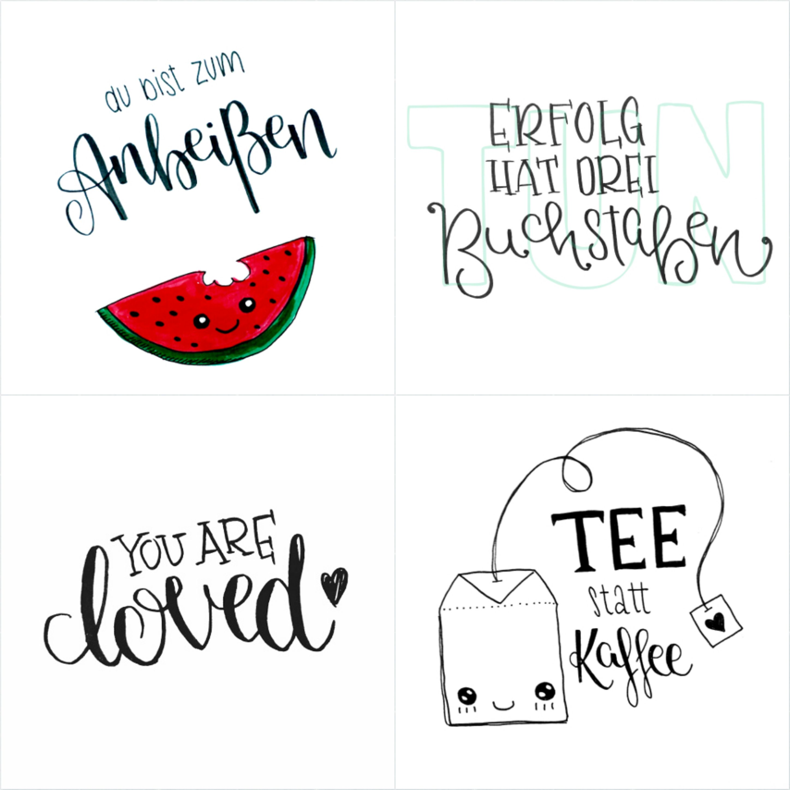

Hi, ich bin's / That's me
Ich bin Aljona Buchloh (geb. Murygina) aus Karlsruhe. Aufgrund meines Vornamens, der von der Aussprache her an eine gewisse Wurstsorte erinnert, bin ich auch bekannt als frau lyoner.
Ich gehöre zur Spezies der modernen Zauberer, die durch die Magie des Programmierens erstaunliche Dinge vollbringen. Meine magischen Fähigkeiten habe ich im Jahre 2011 entdeckt, seither verbringe ich eine Menge Zeit damit, meine Kräfte zu erweitern. Java ist nur einer meiner vielfältigen Zaubersprüche, die ich benutze, um Dingen Leben einzuhauchen. Ich liebe es, gut benutzbare Web Anwendungen zu erschaffen, die Menschen Freude bereiten, indem sie ihnen bei der Bewältigung alltäglicher Probleme helfen.
Meine Leidenschaft für schöne Projekte und sauberen Code lebe ich in meinem Job bei der wundervollen Firma synyx aus.
Ideen zum Leben erwecken
Ich bin relativ aktiv auf GitHub unterwegs, insbesondere bei der Entwicklung eines Urlaubsverwaltung Tools, das ursprünglich als Ich lerne Java Ausbildungsprojekt begann und später Open Source wurde. Schau einfach auf meiner GitHub Seite vorbei, wenn dich meine Projekte interessieren.
Kreativität ist grenzenlos
Nicht nur in der digitalen, auch in der analogen Welt bin ich gerne kreativ unterwegs. Ende 2015 habe ich mich mit dem hochgradig ansteckenden Lettering Virus infiziert und bin seither auch auf Instagram zu finden. Folge mir einfach auf Instagram, wenn du Interesse an meinen analogen Projekten hast.
